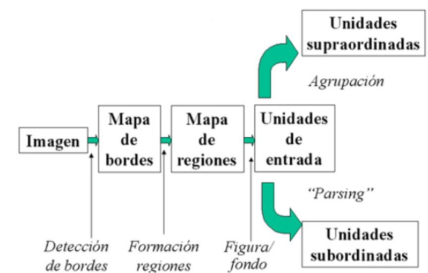

Percepción
La distribución de elementos en una interfaz es una decisión que debe tomar el diseñador, guiado muchas veces por su propia intuición o en peores casos incluso por exigencias del espacio en la pantalla.
A día de hoy se estudian los principios que rigen la organización perceptual, cuyo máximo exponente han sido las llamadas leyes de Agrupación. El modelo más famoso es el de Palmer y Rock sobre los objetos y las escenas.

Profundidad
Hasta la aparición de entornos 3D y la realidad virtual no ha sido un campo muy estudiado por la IPO. Las claves existentes para la percepción de la profundidad son:
-
Superposición: los objetos más próximos cubren a los más lejanos.
-
Tamaño relativo de 2 objetos similares el más grande suele estar más próximo.
-
Altura relativa a mayor altura visual más lejanos.
-
Perspectiva aérea cuanto más alejado, se percibe más borroso y azul.
-
Tamaño familiar si se conocen las dimensiones, el más pequeño es el más cercano.
-
Perspectiva lineal líneas paralelas convergen a medida que se distancia del observador.
Otras claves proporcionadas por la configuración del sistema visual son:
-
Paralelaje del movimiento: cuando estamos en movimiento, los objetos más próximos pasan más rápido por el campo visual que los que están más lejanos.
-
Acomodación y convergencia: La acomodación consiste en el progresivo aplanamiento de las lentes del ojo a medida que el objeto percibido está más alejado. La convergencia se refiere al hecho de que a medida que un objeto se acerca al observador los ojos rotan hacia dentro (convergen).
Geones
La representación centrada en la persona es una descripción de aquello que hay alrededor del observador desde el punto de vista en que éste se encuentra. Esta representación se realiza a partir del análisis de los geones, término con el que se denomina a las unidades volumétricas básicas en las que se componen los objetos. Los geones se caracterizan por:
- Son unidades con volumen o profundidad.
- Son el resultado de la rotación de uno o más contornos sobre un eje espacial, lo que las convierte en unidades de fácil computación para el sistema perceptual.
- Pueden describirse de acuerdo a una serie de características no accidentales similares a los contornos que el objeto proyecta sobre la retina.
Las características más importantes de los geones son:
-
Rectitud - curvatura: los geones pueden estructurar por líneas rectas o curvas.
-
Coterminación - no coterminación: algunos contornos confluyen en el mismo punto.
-
Formade coterminación: generalmente suelen ser 3 los contornos que confluyen.
-
Proyección paralela: algunos contornos de los gones se proyectan en paralelo.
Agrupación
Debemos basarnos principalmente en el diseño por los "principios de agrupación", que son:
-
Proximidad: Si 2 objetos están cerca y alejados de los demás, tienen aser vistos como un grupo.
-
Similitud: Si comparte características perceptuales son percibidos como conjuntos.
-
Destino común: Los que se mueven en la misma dirección, también son percibidos como conjunto.
-
Buena comunicación:
-
Cierre: Los que forman una figura cerrada, se relacionan como el conjunto.
-
Sincronía: Si ocurren en el mismo instante son captados como iguales.
-
Región común:
-
Conexión entre elementos: Elementos conectados son percibidos como iguales.
Notar que por norma general cuantos más principios se apliquen más facilidad tendrá el usuario de detectar los conjuntos, pero si varios principios operan de forma opuesta conseguiremos el efecto contrario.
Affordances
Para maximizarlas es necesario cumplir los siguientes requisitos:
-
Forma funcional: la correspondencia entre la forma del objeto y su función (affordance) debe ser lo más transparente posible.
-
Acción coherente: la acción que siga al accionamiento de un objeto debe ser coherente con su affordance.
-
Relatividad del observador: se crean homogéneos para determinados objetos. (Links en color azul y subrayando).
Iconos
-
La diferencia entre el objeto real y representado debe ser la menor posible.
-
Los iconos se deben presentar en la misma posición a lo largo de todas las pantallas.
-
Los iconos deben ser fácilmente discriminables.
-
Se debe evitar que los iconos tengan varias interpretaciones.